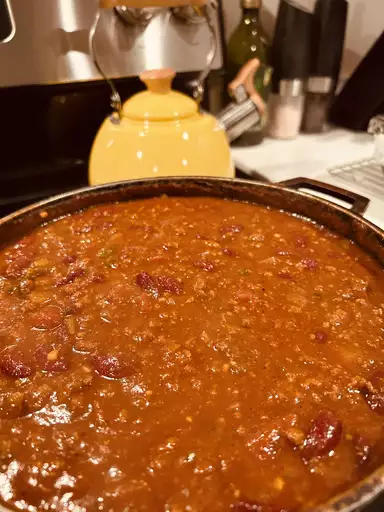

Chili

Some lady's chili
This chili is supposed to be the best damn chili.
We shall be the judge of that.
GO! my chili connoisseurs
Ingredients
- 4 tablespoons olive oil
- 1 yellow onion, chopped
- 1 red bell pepper, chopped
- 1 Anaheim chile pepper, chopped
- 2 red jalapeno pepper, chopped
- 4 garlic cloves, minced
- 2 1/2 pounds lean ground beef
- 1/2 cup Worcestershire sauce
- 1 pinch garlic powder, or to taste
- 2 beef bouillon cubes
- 1 (12 fluid ounce) can or bottle light beer
- 1 (28 ounce) can crushed San Marzano tomatoes
- 1 (14.5 ounce) can fire-roasted diced tomatoes
- 1 (12 ounce) can tomato paste
- 1/2 cup white wine
- 2 tablespoons chili powder
- 2 tablespoons ground cumin
- 1 tablespoon brown sugar
- 1 tablespoon chipotle pepper sauce
- 2 1/2 teaspoons dried basil
- 1 1/2 teaspoons smoked paprika
- 1 teaspoon salt
- 1/2 teaspoon dried oregano
- 1/2 teaspoon ground black pepper
- 2 (16 ounce) cans dark red kidney beans
- 1 cup sour cream
- 3 tablespoons chopped fresh cilantro
- 1/2 teaspoon ground cumin
Directions
Saute the Vegies
Saute onion, bell pepper, Anaheim pepper, jalapenos, and garlic until softenedBrown the Beef
Brown the beef, then season with Worcestershire sauce, garlic powder, bouillon, and beer. After mixing add beef mixture to vegie mixture.Add Tomato Products & Seasonings
Stire crushed tomatoes, diced tomatoes, tomato paste, wine, and seasonings into beef and vegie mix.Simmer!
Bring mixture to a boil, then simmer until the flavors have blended together for about 90 minutes. Add in kidney beans then simmer for another 30 minutes, until beans are hot.Make the Crema
In a blender, combine sour cream, cilantro, and cumin to create a crema. Serve the chili topped with crema and any other toppings you like.
Home
Source